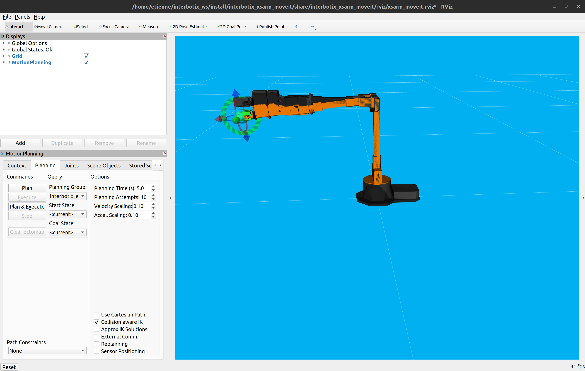

Bienvenue au Workshop ROS 2
Bienvenue au workshop sur le framework ROS 2.
Ce site contient un ensemble de ressources francophones pour l'apprentissage de la robotique opensource avec le framework ROS 2 à travers un workshop interactif.
Diaporama
Structure du Workshop
Le workshop est divisé en cinq parties indépendantes :
Chaque partie se concentre sur un aspect précis de ROS 2, ce qui vous permet d'apprendre à votre rythme et de choisir les sujets qui vous intéressent le plus.
Il est possible de faire un workshop accéléré ou plus long en fonction des domaines voulus. La durée idéale est de 5 à 6 jours.
Prérequis - Comment suivre le TP ?
📖 Vous devez avoir des notions de programmes informatiques, terminaux et commandes.
💻 Vous devez disposer d'un ordinateur de type PC ainsi que Ubuntu 22.04 et ROS 2 Humble installés.
🤖 Si vous ne disposez pas de matériel, l'ensemble des journées peuvent être entièrement réalisées via simulation.
Légende
Les pictogrammes suivants sont utilisés pour faciliter la lecture :
- 💻 : Procédure à exécuter sur votre poste de travail Ubuntu
- 🤖 : Procédure à exécuter sur le robot, en utilisant une connexion SSH
- 🌐 : Liens à visiter pour suivre le workshop
- 🐍 : Code Python à enregistrer et exécuter sur votre poste de travail
- 📥 : Ressource(s) à télécharger
Quiz
À la fin de chaque journée, il y a un quiz pour tester votre compréhension des concepts présentés. Ces quiz sont conçus pour renforcer ce que vous avez appris et vous aider à connaître votre niveau.
Remerciement
Le site est une version amélioré de ROS4Pro qui n'est plus mis à jour et le workshop était sous ROS 1.
Nous espérons que vous trouverez ce workshop utile et instructif. Bonne chance et amusez-vous bien !
Ressources
Diaporama
Ressources importantes
Installation - ROS 2
Selon votre système d'exploitation, vous pouvez suivre l'une des instructions d'installation disponibles à cette adresse.
Pour le workshop, il est recommandé l'utilisation d'Ubuntu 22.04 avec la distribution ROS 2 Humble. Les instructions pour l'installation de ROS 2 sur Ubuntu 22.04 sont disponibles à ce lien.
Installation - Ubuntu 22.04
Vous trouverez ici un guide condensé des étapes à suivre pour installer ROS 2 Humble Hawksbill sur Ubuntu 22.04.
# Ubuntu Universe repository
sudo apt install software-properties-common
sudo add-apt-repository universe
# Add ROS 2 GPG key with apt
sudo apt update && sudo apt install curl -y
sudo curl -sSL https://raw.githubusercontent.com/ros/rosdistro/master/ros.key -o /usr/share/keyrings/ros-archive-keyring.gpg
echo "deb [arch=$(dpkg --print-architecture) signed-by=/usr/share/keyrings/ros-archive-keyring.gpg] http://packages.ros.org/ros2/ubuntu $(. /etc/os-release && echo $UBUNTU_CODENAME) main" | sudo tee /etc/apt/sources.list.d/ros2.list > /dev/null
# ROS 2 packages
sudo apt update && sudo apt upgrade
sudo apt install ros-humble-desktop
sudo apt install ros-dev-tools
# Install on our .bashrc (if you use bash)
echo "source /opt/ros/humble/setup.bash" >> ~/.bashrc
source ~/.bashrc
Atelier - Introduction à ROS 2
Avant de commencer, assurez-vous d'avoir correctement installé ROS 2 comme décrit dans la section précédente.
🧑🏫 Tutoriels
Turtlesim est un outil pédagogique inclus dans ROS 2 qui nous permettra de découvrir et de tester les concepts de base de ROS 2.
Pour cela, vous allez suivre une série de tutoriels de la documentation officielle de ROS 2.
Voici une liste des tutoriels à suivre dans l'ordre :
- Using turtlesim, ros2, and rqt
- Understanding nodes
- Understanding topics
- Understanding services
- Understanding parameters
- Understanding actions
- Using rqt_console to view logs
- Launching nodes
- (Optionnel) Recording and playing back data
- Using colcon to build packages
- Creating a workspace
- Creating a package
- Writing a simple publisher and subscriber (Python)
- Writing a simple service and client (Python)
- Creating custom msg and srv files
- Using parameters in a class (Python)
- Creating an action
- Writing an action server and client (Python)
N'hésitez pas à prendre le temps de bien comprendre chaque tutoriel avant de passer au suivant.
Bon apprentissage !
Quiz - Introduction ROS2
Ressources
Diaporama
Installation - Turtlebot 3
Assemblage du Turtlebot (avec un robot réel)
⚠️ Attention : vous ne pourrez faire aucune erreur de câblage sauf avec le câble d'alimentation de la Raspberry Pi qui doit impérativement être branché comme sur le schéma ci-dessous au risque de déteriorer définitivement le matériel.

🌐 Suivez ce tutoriel pour assembler votre Turtlebot Burger : https://emanual.robotis.com/docs/en/platform/turtlebot3/hardware_setup/#hardware-assembly
Installation - Robot
Flashage de la carte SD
Pour installer l'image sur votre Raspberry Pi, vous pouvez utiliser l'un des deux outils suivants : Raspberry Pi Imager ou Balena Etcher.
L'image à flasher sera fournie par votre enseignant.
Si vous préférez procéder à l'installation complète par vous-même, vous pouvez suivre les instructions détaillées disponibles sur les liens suivants :
WIFI
Pour configurer le WiFi sur votre système Ubuntu via le fichier 50-cloud-init.yaml, suivez les étapes ci-dessous :
- Ouvrez le fichier 50-cloud-init.yaml dans un éditeur de texte avec des privilèges d'administrateur. Vous pouvez le faire en utilisant la commande suivante dans le terminal :
sudo nano /media/$(whoami)/writable/etc/netplan
- Remplacer les informations de configuration de votre réseau WiFi à la fin du fichier.
Votre fichier finale devrait ressembler à ceci :
network:
ethernets:
eth0:
dhcp4: true
optional: true
version: 2
wifis:
wlan0:
dhcp4: true
optional: true
access-points:
your_wifi_ssid:
password: your_wifi_password
-
Remplacez "your_wifi_ssid" par le SSID de votre réseau WiFi et "your_wifi_password" par le mot de passe de votre réseau WiFi.
-
Enregistrez le fichier et quittez l'éditeur de texte. Si vous utilisez nano comme dans l'exemple ci-dessus, vous pouvez le faire en appuyant sur Ctrl+X, puis en appuyant sur Y pour confirmer l'enregistrement des modifications, et enfin en appuyant sur Enter pour quitter.
Connection - SSH
Pour établir une connexion SSH, exécutez la commande suivante dans votre terminal :
ssh ubuntu@turtlebot.local
On vous demandera d'entrer un mot de passe, qui est turtlebot.
Veuillez noter que pour des raisons de sécurité, les caractères du mot de passe ne s'afficheront pas à l'écran lors de la saisie.
Mise à jour de l'OPENCR
🤖 En SSH, exécutez les commandes suivantes :
export OPENCR_PORT=/dev/ttyACM0
export OPENCR_MODEL=burger
cd ~/opencr_update
./update.sh $OPENCR_PORT $OPENCR_MODEL.opencr
Installation - Ordinateur
💻 L'ensemble des procédures est à faire dans le terminal de votre pc.
- Installer
gazebo
sudo apt install ros-humble-gazebo-*
- Installer
cartographer
sudo apt install ros-humble-cartographer ros-humble-cartographer-ros
- Installer
navigation2
sudo apt install ros-humble-navigation2 ros-humble-nav2-bringup
- Compiler les paquets Turtlebot 3
sudo apt remove ros-humble-turtlebot3-msgs
sudo apt remove ros-humble-turtlebot3
mkdir -p ~/workshop_ws/src
cd ~/workshop_ws/src/
git clone -b humble-devel https://github.com/ROBOTIS-GIT/DynamixelSDK.git
git clone -b humble-devel https://github.com/ROBOTIS-GIT/turtlebot3_msgs.git
git clone -b humble-devel https://github.com/ROBOTIS-GIT/turtlebot3.git
git clone -b humble-devel https://github.com/ROBOTIS-GIT/turtlebot3_simulations.git
cd ~/workshop_ws
colcon build --symlink-install --parallel-workers 1
echo 'source ~/workshop_ws/install/setup.bash' >> ~/.bashrc
echo 'export TURTLEBOT3_MODEL=burger' >> ~/.bashrc
source ~/.bashrc
Atelier - Navigation (TurtleBot 3) avec ROS 2
Robot réel
🔍 Avant de commencer, assurez-vous que la configuration réseau de ROS 2 sur votre PC et sur le TB3 est correcte. La variable d'environnement ROS_DOMAIN_ID doit être définie de manière unique pour chaque robot pour éviter les conflits de communication. Vous pouvez le faire en ajoutant la ligne suivante à votre fichier .bashrc :
export ROS_DOMAIN_ID=<votre_numéro_de_groupe>
De plus, il est important de vérifier que le hostname de votre robot est unique, surtout si vous travaillez dans un environnement avec plusieurs groupes dans le même wifi.
🤖 Vous pouvez modifier le hostname en utilisant la commande suivante :
sudo hostnamectl set-hostname <nouveau_hostname>
Remplacez <nouveau_hostname> par le nouveau nom d'hôte que vous souhaitez utiliser pour votre robot. Par exemple, si vous êtes dans le groupe 8, vous pourriez choisir burger8 comme hostname.
1. Bringup du robot
🤖 En ssh sur le TB3 lancez la commande ros2 launch turtlebot3_bringup robot.launch.py.
Le programme doit rester ouvert pendant toute la durée de la manipulation. S'il n'y a aucune erreur vous êtes prêt à piloter le robot depuis votre poste de travail, que ce soit pour la téléopération, la cartographie ou la navigation autonome.
2. Téléopération du robot
🎮 La première étape pour piloter votre robot consiste à vérifier que votre poste de travail peut effectivement prendre le contrôle du Turtlebot, en le téléopérant via les touches du clavier.
💻 Dans un nouveau terminal lancez la commande ros2 run turtlebot3_teleop teleop_keyboard et gardez le focus sur le terminal pour controler le robot avec le clavier grâce aux touches indiquées. Vérifiez que vous pouvez avancer, reculer, tourner à gauche et à droite. Vous pouvez tuer ce dernier avec Ctrl+C lorsque vous avez terminé.
3. Cartographie
🗺️ Nous allons désormais créer la carte de l'environnement dans lequel votre Turtlebot évoluera lorsqu'il naviguera de manière autonome.
💻 Lancez le commande ros2 launch turtlebot3_cartographer cartographer.launch.py. RViz se lance et vous devriez apercevoir le robot, les scans du LIDAR et la carte en construction.
💻 Dans un nouveau terminal lancez la commande ros2 run turtlebot3_teleop teleop_keyboard et gardez le focus sur le terminal pour contrôler le robot avec le clavier comme précédemment. Cependant cette fois-ci, votre carte est en cours d'enregistrement. Quand la carte est terminée ne quittez ni RViz ni le terminal de la cartographie.
💾 La commande qui va suivre va supprimer la carte précédente s'il y en a une, le cas échéant faites-en une copie si vous souhaitez la conserver.
Lancez la commande mkdir ~/map et ros2 run nav2_map_server map_saver_cli -f ~/map/map_workshop qui va sauvegarder la carte dans le dossier $HOME/.map (fichiers maps.yaml et maps.pgm).
4. Navigation
Arrêtez l'ensemble des terminaux hormis le bringup du robot.
💻 Lancez le commande ros2 launch turtlebot3_navigation2 navigation2.launch.py map:=$HOME/map/map_workshop.yaml pour lancer la localisation et la navigation autonome.
👀 Sur RViz vous devez voir le robot, les scans du LIDAR, les particules de AMCL et la carte que vous avez enregistrée.
📍 Si le robot est mal localisé, utilisez l'outil 2D Pose Estimate sur RViz. Cliquez et Glissez avec la souris pour positionner le robot sur la carte.
📍 Pour donner des ordres de navigation, utilisez l'outil Nav2 Goal sur RViz. Cliquez et Glissez avec la souris sur la carte là où le robot doit aller.
5. Scenario de navigation
🚗 L'objectif final du TP est de faire passer le robot par une suite de 2 ou 3 points de passage, comme pour une patrouille, avec un retour au point de départ. Si cela n'est pas déjà fait, choisissez plusieurs points de passage faciles à mesurer avec un mètre depuis le point de départ, avec un grand nombre d'obstacles sur le chemin. Si l'environnement a fortement changé, pensez à enregistrer une nouvelle carte.
Pour réaliser cet objectif, suivez les étapes ci-dessous :
- Créez un nouvel espace de travail ROS, que vous pouvez nommer
workshop_wspar exemple. Vous pouvez le faire en utilisant la commande suivante dans le terminal :
mkdir -p ~/workshop_ws/src
- Créez un nouveau package Python nommé
simple_navigation_goalsavec le fichier principalesimple_navigation_goals. Vous pouvez le faire en utilisant la commande suivante dans le terminal :
cd ~/workshop_ws/src
ros2 pkg create --build-type ament_python simple_navigation_goals --node-name simple_navigation_goals
-
Dans le dossier
simple_navigation_goalsdu package, ajouter le fichierrobot_navigator.py. -
Ouvrez le fichier
simple_navigation_goaldans un éditeur de texte et copiez les lignes de code fournies.
#! /usr/bin/env python3
# Copyright 2021 Samsung Research America
#
# Licensed under the Apache License, Version 2.0 (the "License");
# you may not use this file except in compliance with the License.
# You may obtain a copy of the License at
#
# http://www.apache.org/licenses/LICENSE-2.0
# Unless required by applicable law or agreed to in writing, software
# distributed under the License is distributed on an "AS IS" BASIS,
# WITHOUT WARRANTIES OR CONDITIONS OF ANY KIND, either express or implied.
# See the License for the specific language governing permissions and
# limitations under the License.
#
# Modified by AutomaticAddison.com
import time # Time library
from geometry_msgs.msg import PoseStamped # Pose with ref frame and timestamp
from rclpy.duration import Duration # Handles time for ROS 2
import rclpy # Python client library for ROS 2
from .robot_navigator import BasicNavigator, NavigationResult # Helper module
'''
Navigates a robot from an initial pose to a goal pose.
'''
def main():
# Start the ROS 2 Python Client Library
rclpy.init()
# Launch the ROS 2 Navigation Stack
navigator = BasicNavigator()
# Set the robot's initial pose if necessary
# initial_pose = PoseStamped()
# initial_pose.header.frame_id = 'map'
# initial_pose.header.stamp = navigator.get_clock().now().to_msg()
# initial_pose.pose.position.x = 0.0
# initial_pose.pose.position.y = 0.0
# initial_pose.pose.position.z = 0.0
# initial_pose.pose.orientation.x = 0.0
# initial_pose.pose.orientation.y = 0.0
# initial_pose.pose.orientation.z = 0.0
# initial_pose.pose.orientation.w = 1.0
# navigator.setInitialPose(initial_pose)
# Activate navigation, if not autostarted. This should be called after setInitialPose()
# or this will initialize at the origin of the map and update the costmap with bogus readings.
# If autostart, you should `waitUntilNav2Active()` instead.
# navigator.lifecycleStartup()
# Wait for navigation to fully activate. Use this line if autostart is set to true.
navigator.waitUntilNav2Active()
# If desired, you can change or load the map as well
# navigator.changeMap('/path/to/map.yaml')
# You may use the navigator to clear or obtain costmaps
# navigator.clearAllCostmaps() # also have clearLocalCostmap() and clearGlobalCostmap()
# global_costmap = navigator.getGlobalCostmap()
# local_costmap = navigator.getLocalCostmap()
# Set the robot's goal pose
goal_pose = PoseStamped()
goal_pose.header.frame_id = 'map'
goal_pose.header.stamp = navigator.get_clock().now().to_msg()
goal_pose.pose.position.x = 0.50
goal_pose.pose.position.y = -0.8
goal_pose.pose.position.z = 0.0
goal_pose.pose.orientation.x = 0.0
goal_pose.pose.orientation.y = 0.0
goal_pose.pose.orientation.z = 0.0
goal_pose.pose.orientation.w = 1.0
# sanity check a valid path exists
# path = navigator.getPath(initial_pose, goal_pose)
# Go to the goal pose
navigator.goToPose(goal_pose)
i = 0
# Keep doing stuff as long as the robot is moving towards the goal
while not navigator.isNavComplete():
################################################
#
# Implement some code here for your application!
#
################################################
# Do something with the feedback
i = i + 1
feedback = navigator.getFeedback()
if feedback and i % 5 == 0:
print('Distance remaining: ' + '{:.2f}'.format(
feedback.distance_remaining) + ' meters.')
# Some navigation timeout to demo cancellation
if Duration.from_msg(feedback.navigation_time) > Duration(seconds=600.0):
navigator.cancelNav()
# Some navigation request change to demo preemption
if Duration.from_msg(feedback.navigation_time) > Duration(seconds=120.0):
goal_pose.pose.position.x = -3.0
navigator.goToPose(goal_pose)
# Do something depending on the return code
result = navigator.getResult()
if result == NavigationResult.SUCCEEDED:
print('Goal succeeded!')
elif result == NavigationResult.CANCELED:
print('Goal was canceled!')
elif result == NavigationResult.FAILED:
print('Goal failed!')
else:
print('Goal has an invalid return status!')
# Shut down the ROS 2 Navigation Stack
navigator.lifecycleShutdown()
exit(0)
if __name__ == '__main__':
main()
-
Assurez-vous de remplacer les valeurs de x, y et z pour correspondre à une valeur que vous avez définie.
-
Une fois que vous avez terminé, n'oubliez pas de reconstruire votre espace de travail ROS en utilisant la commande suivante dans le terminal :
cd ~/workshop_ws/
colcon build --symlink-install --parallel-workers 1
- En analysant le code donnée, modifier votre programme pour faire l'objectif du TP.
🧳 Challenge additionnel : Carry my luggage
Challenge inspiré de l'épreuve "Carry my luggage" de la RoboCup @Home. Pour info, le réglement de la compétition se trouve ici (mais ça n'apporte rien pour votre projet) : https://athome.robocup.org/wp-content/uploads/2019_rulebook.pdf
🗺️ Prérequis : avoir une carte représentative de l'environnement.
➡️ Phase 1 : Follow me
Vous avez toute liberté pour préparer le début de l'épreuve (ex. comment faire que le robot soit bien localisé dès le début ?).
Le robot part d'un point connu et doit suivre un humain qui va à un endroit inconnu par le robot (mais à l'intérieur de la carte). L'humain commence l'épreuve en étant en face du robot à une distance de 50 cm.
Le robot doit suivre l'humain en maintenant une distance comprise entre 20cm minimum et 1m maximum.
Pour être valide, l'humain doit avoir un déplacement non trivial : il ne va pas toujours tout droit et il fait varier sa vitesse de marche dans la limite du raisonnable. Distance minimum de marche demandée 4 mètres (mais vous êtes libres de faire plus si ça vous arrange, ça n'impactera pas directement la note). Il faut obligatoirement que le robot traverse une porte.
Lorsque l'humain est arrivé à sa destination, il s'arrête pendant une durée d'au moins 3 secondes. Le robot doit alors comprendre que la phase 1 est terminée et passer à la phase 2.
↩️ Phase 2 : Go home
Le robot doit repartir et naviguer en totale autonomie jusqu'à son point de départ. Sur le retour, vous rajouterez jusqu'à :
- 1 obstacle statique sur son chemin de retour
- 1 obstacle dynamique (typiquement un humain qui lui coupe la route)
- 1 obstacle qui bloque complètement le passage prévu par le robot (il faut qu'il ait la possiblité d'arriver à destination par un autre chemin)
Si le robot arrive à destination (à +-20cm, +-15°) la phase 2 est validée.
↙️ Phase 3 : Dock
Si le robot arrive à destination (à +-20cm, +-15°) la phase 2 est validée.
Le robot doit chercher où se trouve sa base et s'y accoster. La position grossière de la base est connue mais cette partie n'est validée que si le robot réussi un accostage précis sans contact : la distance entre le robot et la base soit être supériere à 5mm et inférieure à 2cm.
Vous avez toute liberté pour choisir un objet qui représentera la base du robot. Un pot de peinture par exemple serait un choix pertinent (la symétrie radiale peut simplifier la détection).
Simulation
⚠️ Attention la simulation du TB3 n'est à utiliser qu'en dernier recours pour remplacer votre robot s'il ne fonctionne pas. Avant de passer en simulation demandez de l'aide pour réparer votre robot.
Dans le ̀ .bashrc`, pour que gazebo se lance bien, il faut mettre les lignes suivantes :
stat /usr/share/gazebo/setup.sh &> /dev/null
if [ $? -eq 0 ]; then
source /usr/share/gazebo/setup.sh
fi
1. Lancement de la simulation
Le paquet Turtlebot3 propose plusieurs environnement de simulation.
💻 Lancer une des deux commandes suivantes en fonction de l'environnement que vous voulez lancer.
- Monde simple :
ros2 launch turtlebot3_gazebo turtlebot3_world.launch.py - Warehouse :
ros2 launch turtlebot3_gazebo turtlebot3_house.launch.py
Le simulateur gazebo doit rester ouvert pendant toute la durée de la manipulation. S'il n'y a aucune erreur vous êtes prêt à piloter le robot depuis votre poste de travail, que ce soit pour la téléopération, la cartographie ou la navigation autonome.
2. Téléopération du robot
🎮 La première étape pour piloter votre robot consiste à vérifier que votre poste de travail peut effectivement prendre le contrôle du Turtlebot, en le téléopérant via les touches du clavier.
💻 Dans un nouveau terminal lancez la commande ros2 run turtlebot3_teleop teleop_keyboard et gardez le focus sur le terminal pour controler le robot avec le clavier grâce aux touches indiquées. Vérifiez que vous pouvez avancer, reculer, tourner à gauche et à droite. Vous pouvez tuer ce dernier avec Ctrl+C lorsque vous avez terminé.
3. Cartographie
🗺️ Nous allons désormais créer la carte de l'environnement dans lequel votre Turtlebot évoluera lorsqu'il naviguera de manière autonome.
💻 Lancez le commande ros2 launch turtlebot3_cartographer cartographer.launch.py use_sim_time:=True. RViz se lance et vous devriez apercevoir le robot, les scans du LIDAR et la carte en construction.
💻 Dans un nouveau terminal lancez la commande ros2 run turtlebot3_teleop teleop_keyboard et gardez le focus sur le terminal pour contrôler le robot avec le clavier comme précédemment. Cependant cette fois-ci, votre carte est en cours d'enregistrement. Quand la carte est terminée ne quittez ni RViz ni le terminal de la cartographie.
💾 La commande qui va suivre va supprimer la carte précédente s'il y en a une, le cas échéant faites-en une copie si vous souhaitez la conserver. Lancez la commande mkdir ~/map puis ros2 run nav2_map_server map_saver_cli -f ~/map/map_workshop qui va sauvegarder la carte dans le dossier $HOME/.map (fichiers maps.yaml et maps.pgm).
4. Navigation
Arrêtez l'ensemble des terminaux hormis la simulation.
💻 Lancez le commande ros2 launch turtlebot3_navigation2 navigation2.launch.py use_sim_time:=True map:=$HOME/map/map_workshop.yaml pour lancer la localisation et la navigation autonome.
👀 Sur RViz vous devez voir le robot, les scans du LIDAR, les particules de AMCL et la carte que vous avez enregistrée.
📍 Si le robot est mal localisé, utilisez l'outil 2D Pose Estimate sur RViz. Cliquez et Glissez avec la souris pour positionner le robot sur la carte.
📍 Pour donner des ordres de navigation, utilisez l'outil Nav2 Goal sur RViz. Cliquez et Glissez avec la souris sur la carte là où le robot doit aller.
5. Scenario de navigation
🚗 L'objectif final du TP est de faire passer le robot par une suite de 2 ou 3 points de passage, comme pour une patrouille, avec un retour au point de départ. Si cela n'est pas déjà fait, choisissez plusieurs points de passage faciles à mesurer avec un mètre depuis le point de départ, avec un grand nombre d'obstacles sur le chemin. Si l'environnement a fortement changé, pensez à enregistrer une nouvelle carte.
Pour réaliser cet objectif, suivez les étapes ci-dessous :
- Créez un nouvel espace de travail ROS, que vous pouvez nommer
workshop_wspar exemple. Vous pouvez le faire en utilisant la commande suivante dans le terminal :
mkdir -p ~/workshop_ws/src
- Créez un nouveau package Python nommé
simple_navigation_goalsavec le fichier principalesimple_navigation_goals. Vous pouvez le faire en utilisant la commande suivante dans le terminal :
cd ~/workshop_ws/src
ros2 pkg create --build-type ament_python simple_navigation_goals --node-name simple_navigation_goals
-
Dans le dossier
simple_navigation_goalsdu package, ajouter le fichierrobot_navigator.py. -
Ouvrez le fichier
simple_navigation_goaldans un éditeur de texte et copiez les lignes de code fournies.
#! /usr/bin/env python3
# Copyright 2021 Samsung Research America
#
# Licensed under the Apache License, Version 2.0 (the "License");
# you may not use this file except in compliance with the License.
# You may obtain a copy of the License at
#
# http://www.apache.org/licenses/LICENSE-2.0
# Unless required by applicable law or agreed to in writing, software
# distributed under the License is distributed on an "AS IS" BASIS,
# WITHOUT WARRANTIES OR CONDITIONS OF ANY KIND, either express or implied.
# See the License for the specific language governing permissions and
# limitations under the License.
#
# Modified by AutomaticAddison.com
import time # Time library
from geometry_msgs.msg import PoseStamped # Pose with ref frame and timestamp
from rclpy.duration import Duration # Handles time for ROS 2
import rclpy # Python client library for ROS 2
from .robot_navigator import BasicNavigator, NavigationResult # Helper module
'''
Navigates a robot from an initial pose to a goal pose.
'''
def main():
# Start the ROS 2 Python Client Library
rclpy.init()
# Launch the ROS 2 Navigation Stack
navigator = BasicNavigator()
# Set the robot's initial pose if necessary
# initial_pose = PoseStamped()
# initial_pose.header.frame_id = 'map'
# initial_pose.header.stamp = navigator.get_clock().now().to_msg()
# initial_pose.pose.position.x = 0.0
# initial_pose.pose.position.y = 0.0
# initial_pose.pose.position.z = 0.0
# initial_pose.pose.orientation.x = 0.0
# initial_pose.pose.orientation.y = 0.0
# initial_pose.pose.orientation.z = 0.0
# initial_pose.pose.orientation.w = 1.0
# navigator.setInitialPose(initial_pose)
# Activate navigation, if not autostarted. This should be called after setInitialPose()
# or this will initialize at the origin of the map and update the costmap with bogus readings.
# If autostart, you should `waitUntilNav2Active()` instead.
# navigator.lifecycleStartup()
# Wait for navigation to fully activate. Use this line if autostart is set to true.
navigator.waitUntilNav2Active()
# If desired, you can change or load the map as well
# navigator.changeMap('/path/to/map.yaml')
# You may use the navigator to clear or obtain costmaps
# navigator.clearAllCostmaps() # also have clearLocalCostmap() and clearGlobalCostmap()
# global_costmap = navigator.getGlobalCostmap()
# local_costmap = navigator.getLocalCostmap()
# Set the robot's goal pose
goal_pose = PoseStamped()
goal_pose.header.frame_id = 'map'
goal_pose.header.stamp = navigator.get_clock().now().to_msg()
goal_pose.pose.position.x = 0.50
goal_pose.pose.position.y = -0.8
goal_pose.pose.position.z = 0.0
goal_pose.pose.orientation.x = 0.0
goal_pose.pose.orientation.y = 0.0
goal_pose.pose.orientation.z = 0.0
goal_pose.pose.orientation.w = 1.0
# sanity check a valid path exists
# path = navigator.getPath(initial_pose, goal_pose)
# Go to the goal pose
navigator.goToPose(goal_pose)
i = 0
# Keep doing stuff as long as the robot is moving towards the goal
while not navigator.isNavComplete():
################################################
#
# Implement some code here for your application!
#
################################################
# Do something with the feedback
i = i + 1
feedback = navigator.getFeedback()
if feedback and i % 5 == 0:
print('Distance remaining: ' + '{:.2f}'.format(
feedback.distance_remaining) + ' meters.')
# Some navigation timeout to demo cancellation
if Duration.from_msg(feedback.navigation_time) > Duration(seconds=600.0):
navigator.cancelNav()
# Some navigation request change to demo preemption
if Duration.from_msg(feedback.navigation_time) > Duration(seconds=120.0):
goal_pose.pose.position.x = -3.0
navigator.goToPose(goal_pose)
# Do something depending on the return code
result = navigator.getResult()
if result == NavigationResult.SUCCEEDED:
print('Goal succeeded!')
elif result == NavigationResult.CANCELED:
print('Goal was canceled!')
elif result == NavigationResult.FAILED:
print('Goal failed!')
else:
print('Goal has an invalid return status!')
# Shut down the ROS 2 Navigation Stack
navigator.lifecycleShutdown()
exit(0)
if __name__ == '__main__':
main()
-
Assurez-vous de remplacer les valeurs de x, y et z pour correspondre à une valeur que vous avez définie.
-
Une fois que vous avez terminé, n'oubliez pas de reconstruire votre espace de travail ROS en utilisant la commande suivante dans le terminal :
cd ~/workshop_ws/
colcon build --symlink-install --parallel-workers 1
```
7. En analysant le code donnée, modifier votre programme pour faire l'objectif du TP.
Ressources
Diaporama
Atelier - Vision et IA avec ROS 2
Ateliers - Perceptions avec OpenCV
Le domaine de "Computer Vision" (CV, ou vision par ordinateur) est une branche de l'intelligence artificielle, qui traite des techniques permettant d'extraire des informations de "haut niveau" utiles à partir d'images. Donc ce domaine développé depuis les années 60, on retrouve généralement des techniques provenant des mathématiques, du traitement d'images, des neurosciences, de l'apprentissage artificiel… Nous allons ici effleurer ce domaine en nous familiarisant avec OpenCV.
1. Introduction à OpenCV
OpenCV est une bibliothèque logicielle qui est devenue le "standard" du domaine. Cette bibliothèque fournit un énorme ensemble de fonctionnalités et d'algorithmes à la pointe de l'état de l'art. Entre autres sont disponibles :
- Des mécanismes d'entrées/sorties des images et flux vidéos (caméras, fichiers…)
- Des mécanismes de traitement d'images (gestion des formats, couleurs, déformations… )
- Des milliers d'algorithmes développés par la communauté et les industriels (reconnaissance d'image, suivi d'objet, vision 3D, apprentissage…)
2. Ouverture d'une image
-
Téléchargez l'image :

-
Créez un fichier
couleurs.pyimport numpy as np import cv2 as cv img = cv.imread('ergo_cubes.jpg') -
Quelle information nous donne
print(img.shape)?

- On peut accéder à chaque pixel par indexation du tableau
imgavecimg[LIGNE, COLONNE](ce qui est très inefficace), que représente la valeurs données parimg[170,255]? - Pour accéder au différents canaux de couleur on peut de même utiliser:
img[:,:,CANAL]avecCANALla couleur voulue. - On peut facilement créer des régions d'intérêt (ROI) en utilisant les mécanismes disponibles dans python :
roi=img[140:225, 210:310]
- OpenCV offre également quelques fonctionnalités pratiques d'interface utilisateur (GUI). Pour afficher une image :
cv.imshow("Mon image", roi) #on donne un nom unique à chaque fenêtre
cv.waitKey(0) #permet d'attendre à a l'infini
- Enfin, on peut écrire les images dans des fichiers :
cv.imwrite("roi.png", roi)
- Affichez les trois canaux de couleur dans des fenêtres différentes
3. Seuil sur la couleur
Nous avons vu que les images sont généralement représentés dans l'espace BGR, ce qui est cohérent avec le fonctionnement du pixel de l'écran (et du capteur), mais moins évidant lorsque l'on souhaite travailler sur les couleurs. Comment par exemple définir le volume 3D dans l'espace BGR représentant le "rose"? C'est pourquoi pour traiter la couleur, il est recommandé de convertir l'encodage de l'image dans un autre espace. L'espace le plus couramment utilisé est le HSV (Hue, Saturation, Value ou Teinte, Saturation, Valeur).
- Pour convertir une image de BGR vers HSV il suffit d'utiliser :
img_HSV = cv.cvtColor(img, cv.COLOR_BGR2HSV)
On notera que l'espace HSV est encodé avec H dans [0, 179], S dans [0,255] et V dans [0,255]
- On peut ensuite appliquer un seuil avec :
img_seuil = cv.inRange(img_HSV, (MIN_H, MIN_S, MIN_V), (MAX_H, MAX_S, MAX_V)
Le résultat de la fonction de seuil inRange est une image binaire
- Expérimentez avec les valeurs de seuil pour ne faire apparaître que le cube rouge. Note : il est facile de créer des "trackbars" pour changer en temps réel les valeurs, voir le tutoriel
4. Détection des cubes
Nous sommes maintenant capable de sélectionner des pixels en fonction de leur couleur, il nous faut encore "regrouper" ces informations afin de détecter et reconnaître les cubes.
- Une méthode simple consiste à considérer que les pixels d'une couleur choisie font partie d'un "blob" (une région de pixels voisins) représentant le même objet. Dans l'image binaire résultat du seuil, il nous suffit de chercher le
contourdes zones blanches. Pour cela nous allons utiliser la fonctionfindContours()(voir le tutoriel)
contours, hierarchy = cv.findContours(
img_seuil, cv.RETR_EXTERNAL, cv.CHAIN_APPROX_SIMPLE)
contours est une liste contenant tous les contours trouvés hierarchy contient les informations sur la hiérarchie des contours (les contours à l'intérieur des contours)
- Sur une image "naturelle" (avec du bruit) les contours trouvés seront rarement parfaits. Il est possible de "filtrer" ces contours en ne considérant par exemple que ceux dons la surface est cohérente avec les objets recherchés (voir le tutoriel)
- Parcourez la liste des contours et dessinez les contours dont la surface est comprise entre 2500 et 3700 On utilisera une boucle sur
contours, la fonctioncontourArea()retournant la surface d'un contour, ainsi que la fonction de dessindrawContours()(dessinez sur l'image d'origine) - Une fois le contour du cube trouvé, nous pouvons chercher son centre avec la fonction
moments()avec une fonction telle que:
def trouver_centroid(cnt):
M = cv.moments(cnt)
if M['m00'] > 0.0:
cx = int(M['m10']/M['m00'])
cy = int(M['m01']/M['m00'])
return (x, y)
else:
return (0, 0)
Nous pouvons ensuite utiliser la position obtenue pour écrire un texte :
cv.putText(img, 'cube', (x, y), cv.FONT_HERSHEY_SIMPLEX, 1,(255, 255, 255),1, cv.LINE_AA)

- Maintenant que nous sommes capable de détecter un cube d'une couleur, étendez le programme pour détecter la présence et la position des 3 cubes
5. Intégration avec ROS
Pour intégrer la détection de cube coloré à ROS 2 en utilisant l'image de la caméra de votre ordinateur ou une image statique, vous pouvez créer un nœud ROS qui offre un service. Ce service prendra en entrée un string indiquant la source de l'image (caméra ou image statique) et renverra la position et le label du cube détecté. Voici comment vous pouvez le faire :
- Créez un nouveau package ROS nommé color_cube_detection. Vous pouvez le faire en utilisant la commande suivante dans le terminal :
cd ~/workshop_ws/src
ros2 pkg create --build-type ament_python color_cube_detection --node-name color_cube_detector
-
Ouvrez le fichier color_cube_detector.py dans un éditeur de texte et ajoutez le code pour créer un nœud ROS qui offre un service. Le service doit prendre en entrée un string indiquant la source de l'image (caméra ou image statique) et renvoyer la position et le label du cube détecté.
-
Une fois que vous avez terminé, n'oubliez pas de reconstruire votre espace de travail ROS en utilisant la commande suivante dans le terminal :
cd ~/workshop_ws/
colcon build --symlink-install
Maintenant, vous devriez être prêt à lancer votre nœud color_cube_detector et à voir votre robot détecter des cubes colorés.
Ateliers - PyTorch
Torch est une bilbiothèque opensource d’apprentissage machine et en particulier d’apprentissage profond. Depuis 2018 seule sa version Python nommée PyTorch est maintenue. Nous allons l’utiliser ici sur des imagettes sur lesquelles sont inscrites des chiffres marqués manuellement au feutre avec différentes calligraphies. Le réseau de neurones que vous allez créer devra apprendre lui-même à déterminer quel chiffre est marqué, ce que l’on appelle classifier.
Pour effectuer cet atelier, vous devez installer quelques packages :
pip install torchvision
Entraînement de l'IA
1. Importation des Bibliothèques et Téléchargement des Données
from torchvision import datasets
from torchvision.transforms import ToTensor
# Ignore deprecated warnings
import warnings
warnings.filterwarnings("ignore", category=UserWarning)
train_data = datasets.MNIST(
root = 'data',
train = True,
transform = ToTensor(),
download = True
)
test_data = datasets.MNIST(
root = 'data',
train = False,
transform = ToTensor(),
download = True
)
print(train_data)
print(test_data)
print(train_data.data.shape)
print(test_data.data.shape)
print(train_data.targets.shape)
print(train_data.targets)
Quelles sont les données affichés via les print ?
2. Chargement des Données avec DataLoader
from torch.utils.data import DataLoader
loaders = {
'train' : DataLoader(train_data,
batch_size=100,
shuffle=True,
num_workers=1),
'test' : DataLoader(test_data,
batch_size=100,
shuffle=True,
num_workers=1)
}
print(loaders)
3. Définition du Modèle CNN
import torch.nn as nn
import torch.nn.functional as F
import torch.optim as optim
class CNN(nn.Module):
def __init__(self):
super(CNN, self).__init__()
self.conv1 = nn.Conv2d(1, 10, kernel_size=5)
self.conv2 = nn.Conv2d(10, 20, kernel_size=5)
self.conv2_drop = nn.Dropout2d()
self.fc1 = nn.Linear(320, 50)
self.fc2 = nn.Linear(50, 10)
def forward(self, x):
x = F.relu(F.max_pool2d(self.conv1(x), 2))
x = F.relu(F.max_pool2d(self.conv2_drop(self.conv2(x)), 2))
x = x.view(-1, 320)
x = F.relu(self.fc1(x))
x = F.dropout(x, training=self.training)
x = self.fc2(x)
return F.softmax(x)
4. Configuration du Dispositif, du Modèle, de l'Optimiseur et de la Fonction de Perte
import torch
device = torch.device('cuda' if torch.cuda.is_available() else 'cpu')
model = CNN().to(device)
optimizer = optim.Adam(model.parameters(), lr=0.001)
loss_fn = nn.CrossEntropyLoss()
5. Définition des Fonctions d'Entraînement et de Test
def train(epoch):
model.train()
for batch_idx, (data, target) in enumerate(loaders['train']):
data, target = data.to(device), target.to(device)
optimizer.zero_grad()
output = model(data)
loss = loss_fn(output, target)
loss.backward()
optimizer.step()
if batch_idx % 20 == 0:
print(f"Train Epoch: {epoch} [{batch_idx * len(data)} / {len(loaders['train'].dataset)} ({100 * batch_idx / len(loaders['train']):0f}%)]\t{loss.item():.6f}")
def test():
model.eval()
test_loss = 0
correct = 0
with torch.no_grad():
for data, target in loaders['test']:
data, target = data.to(device), target.to(device)
output = model(data)
test_loss += loss_fn(output, target).item()
pred = output.argmax(dim=1, keepdim=True)
correct += pred.eq(target.view_as(pred)).sum().item()
test_loss /= len(loaders['test'].dataset)
print(f"\nTest set: Average loss: {test_loss: 0.4f}, Accuracy {correct}/{len(loaders['test'].dataset)} ({100 * correct / len(loaders['test'].dataset):.0f}%\n")
6. Entraînement et Évaluation du Modèle
for epoch in range(1, 10):
train(epoch)
test()
7. Sauvegarde du Modèle Entraîné
torch.save(model.state_dict(), 'mnist_cnn.pth')
Utilisation de l'IA entrainé
1. Importation des Bibliothèques et Téléchargement des Données
from torchvision import datasets
from torchvision.transforms import ToTensor
from torch.utils.data import DataLoader
import torch
import matplotlib.pyplot as plt
import numpy as np
import cv2
# Ignore deprecated warnings
import warnings
warnings.filterwarnings("ignore", category=UserWarning)
test_data = datasets.MNIST(
root='data',
train=False,
transform=ToTensor(),
download=True
)
test_loader = DataLoader(test_data, batch_size=100, shuffle=True, num_workers=1)
print(test_data)
print(test_data.data.shape)
print(test_data.targets.shape)
Définition du Modèle CNN
import torch.nn as nn
import torch.nn.functional as F
class CNN(nn.Module):
def __init__(self):
super(CNN, self).__init__()
self.conv1 = nn.Conv2d(1, 10, kernel_size=5)
self.conv2 = nn.Conv2d(10, 20, kernel_size=5)
self.conv2_drop = nn.Dropout2d()
self.fc1 = nn.Linear(320, 50)
self.fc2 = nn.Linear(50, 10)
def forward(self, x):
x = F.relu(F.max_pool2d(self.conv1(x), 2))
x = F.relu(F.max_pool2d(self.conv2_drop(self.conv2(x)), 2))
x = x.view(-1, 320)
x = F.relu(self.fc1(x))
x = F.dropout(x, training=self.training)
x = self.fc2(x)
return F.log_softmax(x, dim=1)
### 3. Chargement du modèle entraîné
device = torch.device('cuda' if torch.cuda.is_available() else 'cpu')
# Créer une instance du modèle
model = CNN().to(device)
# Charger l'état du modèle
model.load_state_dict(torch.load('mnist_cnn.pth'))
# S'assurer que le modèle est en mode évaluation
model.eval()
4. Prédiction et Visualisation
# Example code to test the loaded model
test_data = datasets.MNIST(
root='data',
train=False,
transform=ToTensor(),
download=True
)
test_loader = DataLoader(test_data, batch_size=100, shuffle=True, num_workers=1)
# Get a batch of test data
data, target = next(iter(test_loader))
data, target = data.to(device), target.to(device)
# Perform prediction
output = model(data)
predictions = output.argmax(dim=1, keepdim=True)
# Number of images to display
num_images = 10
# Plot the selected images
for i in range(num_images):
image = data[i].cpu().squeeze(0).numpy()
plt.figure()
plt.imshow(image, cmap='gray')
plt.title(f"Prediction: {predictions[i].item()}")
plt.show()
Intégration avec ROS
Pour intégrer la détection de cube numéroté à ROS 2 en utilisant l'image de la caméra de votre ordinateur ou une image statique, vous pouvez créer un nœud ROS qui offre un service. Ce service prendra en entrée un string indiquant la source de l'image (caméra ou image statique) et renverra la position et le label du cube détecté.
Pour détecter la position du cube, utiliser l'activité précédente avec la méthode find_contours.
Voici comment vous pouvez le faire :
- Créez un nouveau package ROS nommé color_cube_detection. Vous pouvez le faire en utilisant la commande suivante dans le terminal :
cd ~/workshop_ws/src
ros2 pkg create --build-type ament_python cube_pytorch --node-name cube_pytorch
-
Ouvrez le fichier cube_pytorch.py dans un éditeur de texte et ajoutez le code pour créer un nœud ROS qui offre un service. Le service doit prendre en entrée un string indiquant la source de l'image (caméra ou image statique) et renvoyer la position et le label du cube détecté.
-
Une fois que vous avez terminé, n'oubliez pas de reconstruire votre espace de travail ROS en utilisant la commande suivante dans le terminal :
cd ~/workshop_ws/
colcon build --symlink-install
Maintenant, vous devriez être prêt à lancer votre nœud color_cube_detector et à voir votre robot détecter des cubes colorés.
Ressources
Diaporama
Vous trouverez le diaporama à cette adresse : https://files.ros4.pro/manipulation.pdf
Liens
- Documentation du bras
- Documentation du bras - ROS 2 Interface
- Documentation du bras - ROS 2 Python ROS Interface
- Documentation du bras - ROS2
- Demo python robot
Installation
Installer les paquets suivants :
sudo apt install ros-humble-moveit ros-${ROS_DISTRO}-urdf-tutorial
sudo apt install curl
curl 'https://raw.githubusercontent.com/Interbotix/interbotix_ros_manipulators/main/interbotix_ros_xsarms/install/amd64/xsarm_amd64_install.sh' > xsarm_amd64_install.sh
chmod +x xsarm_amd64_install.sh
./xsarm_amd64_install.sh -d humble -n
Dans le ̀.bashrc, pour que gazebo se lance bien, il faut mettre les lignes suivantes :
stat /usr/share/gazebo/setup.sh &> /dev/null
if [ $? -eq 0 ]; then
source /usr/share/gazebo/setup.sh
fi
Lancer la commande suivante pour que les modifications soient prise en compte :
source ~/.bashrc
Atelier - Manipulation avec ROS 2
Le bras robotisé WidowX-250 6DOF appartient à la famille des bras de la série X d'Interbotix, équipée des actionneurs DYNAMIXEL de la série X de Robotis.
Les servomoteurs DYNAMIXEL XM430-W350 et DYNAMIXEL XL430-W250 offrent une haute résolution de 4096 positions et des paramètres PID définissables par l'utilisateur, ainsi que la surveillance de la température, le retour de position, les niveaux de tension, la charge et les paramètres de conformité accessibles à l'utilisateur. Au cœur du WidowX-250 6DOF se trouve le Robotis DYNAMIXEL U2D2 qui permet un accès facile au logiciel DYNAMIXEL Wizard ainsi qu'à ROS. Le WidowX-250 6DOF offre 6 degrés de liberté et une rotation complète de 360 degrés.
1. Comprendre la représentation d’un robot ROS
Un robot intégré à ROS est composé d’au minimum :
- un descripteur URDF
- un contrôleur qui gère les E/S avec le robot
1.1. Comprendre le descripteur URDF
Pour visualiser l'URDF du robot wx250s, lancer la commande suivante :
ros2 launch urdf_tutorial display.launch.py model:=/home/$USER/interbotix_ws/src/interbotix_ros_manipulators/interbotix_ros_xsarms/interbotix_xsarm_descriptions/urdf/wx250s.urdf.xacro
⚠️ Dans Global Options, mettez la valeur de fixed frame à wx250s/base_link au lieu de base_link.
Vous pouvez aussi visualiser l'arbre du robot URDF :
cd /home/$USER/interbotix_ws/src/interbotix_ros_manipulators/interbotix_ros_xsarms/interbotix_xsarm_descriptions/urdf/
ros2 run xacro xacro -o wx250s.urdf wx250s.urdf.xacro
urdf_to_graphviz wx250s.urdf
Ouvrez le PDF obtenu dans le dossier des descriptions du robot (wx250s.pdf) puis déterminez :
- Que représentent les rectangles ?
- Que représentent les bulles ?
- Que représentent les flèches et surtout les valeurs
xyzetrpyassociées ?
1.2 Comprendre les E/S du contrôleur
Lancer le robot avec la commande suivante :
LC_NUMERIC=en_US.UTF-8 ros2 launch interbotix_xsarm_descriptions xsarm_description.launch.py robot_model:=wx250s use_joint_pub_gui:=true
1.2.a. Topics du robot
✍ Avec l’utilitaire ros2 topic, lister les topics disponibles puis consultez celui qui décrit l’état courant des joints, en particulier :
- Quel est son nom ?
- Quel est le type de message qu'il transmet ?
- A quelle fréquence (en Hertz) est-ce qu'il met à jour l'état des joints ?
1.3 Tracer la courbe des positions des moteurs en temps réel
Lancer le robot avec la commande suivante :
LC_NUMERIC=en_US.UTF-8 ros2 launch interbotix_xsarm_descriptions xsarm_description.launch.py robot_model:=wx250s use_joint_pub_gui:=true
✍ Démarrez ros2 run rqt_graph rqt_graph, démarrez le streaming ROS Topic Subscriber, et sélectionnez /wx250s/joint_states. Sélectionnez la position et la vitesse angulaire du moteur m6 puis faîtes-les glisser sur le graphe. Bougez les moteurs à la main et vérifiez que les valeurs sont tracées en temps réel.
2. Cinématique, et planification avec MoveIt dans RViz
Il y a une erreur dans le groupe interbotix_gripper pour MoveIt 2!
Modifier le fichier ~/interbotix_ws/src/interbotix_ros_manipulators/interbotix_ros_xsarms/interbotix_xsarm_moveit/config/controllers/wx250s_controllers.yaml
Dans le group /wx250s/gripper_controller, ajouter right_finger.
/wx250s/gripper_controller:
action_ns: follow_joint_trajectory
type: FollowJointTrajectory
default: true
joints:
- left_finger
- right_finger
2.1. Démarrer avec MoveIt avec un robot réel
Démarrez MoveIt et Gazebo avec la commande suivante :
LC_NUMERIC=en_EN.UTF-8 ros2 launch interbotix_xsarm_moveit xsarm_moveit.launch.py robot_model:=wx250s hardware_type:=gz_classic
Rviz doit démarrer avec un WidowX-250 6DOF en simulation gazebo. .
2.1.1. Planification
💻 Dans l'onglet Planning, section Query puis Planning group, sélectionnez le groupe interbotix_arm, bougez le goal (la sphère 3D bleue) en position et en orientation puis cliquez sur Plan.
✍ Une représentation orange 3D de robots se superposent avec le robot, déterminez son rôle de celui-ci eux en testant également la fonctionnalité Plan and Execute.
2.1.2. Planning groups
💻✍ Testez également le groupe interbotix_arm en plus du premier interbotix_gripper et lancez des planifications de mouvement pour tester :
- Quelle est la différence entre ces 2 groupes ?
- Quel est le groupe pour lequel le goal est le plus facilement manipulable ?
- Pourquoi ce groupe est-il plus facilement manipulable que l'autre ?
- Déduisez-en ce que désigne exactement un
planning group
2.1.3. Interroger l'arbre des transformations tf en ligne de commande
Nous allons visualiser et interroger l'arbre des transformations nommé tf.
💻✍ Démarrer MoveIt puis dans un autre terminal lancer ros2 run tf2_tools view_frames. Un fichier PDF nommé frames.pdf a été créé : les frames (repères géométriques) qu'ils contient sont les mêmes que ceux dessinés par Rviz en rouge-vert-bleu.
- Comment est nommé le repère de base ?
- Comment sont nommés les deux effecteurs finaux possibles ?
- La commande
ros2 run tf2_ros tf2_echo frameA frameBrenvoie la transformation actuelle de frameB dans frameA. Modifiez cette commande pour déterminer quelle est la position actuelle d'un des effecteurs dans le repère de base. Ses coordonnées peuvent vous servir par la suite, pour les définir comme cible à atteindre.
2.3. Ecrire un noeud Python ROS
Avec la documentation suivante : https://docs.trossenrobotics.com/interbotix_xsarms_docs/ros2_packages/python_demos.html, créer un monde gazebo où vous allez attraper un objet avec le robot WidowX-250.
Atelier - Intégration avec ROS 2
L'intégration consiste à intégrer dans une même cellule robotique les 3 briques logicielles travaillées les autres jours, à savoir :
- La manipulation par le bras robotique
- La navigation avec le robot roulant
- La vision avec le réseau de neurones
Le scenario de l'intégration est un système de tri robotisé de cubes dans trois bacs différents selon leur marquage au feutre.
1. Actions séquentielles de la cellule robotique
Les actions minimale de la cellule robotique sont les suivantes :
-
Le bras WidowX-250 6DOF est utilisé pour récupérer un cube. Cette action est réalisée par le nœud de manipulation qui contrôle le bras robotique.
-
Le bras effectue une tâche de pick-and-place pour déplacer le cube récupéré vers un emplacement temporaire.
-
Une fois que le cube a été déplacés, le bras récupère un cube chiffré. Le chiffre sur le cube peut varier de 1 à 3, mais il est possible d'aller jusqu'à 9 (via un modulo).
La détection du chiffre peut être effectuée soit par une webcam, soit par une photo prise en réel. Cette photo est envoyée au réseau de neurones qui va effectuer une prédiction sur le label marqué à la main. -
Le nœud de navigation récupère les coordonnées du cube chiffré et son label. Le Turtlebot lit le label du cube et se rend à la case correspondante (1, 2 ou 3).
-
Il effectue une rotation de 360° pour faire chuter le cube dans la zone de tri à l'aide du mât.
Le robot fais cette opération trois fois (égale au nombre de cube sur la table dans la simulation).
Note importante : Pour une gestion plus efficace et organisée, il est recommandé d'utiliser un fichier .launch pour démarrer l'intégralité de la démonstration.
2. Présentation Orale
La présentation orale comprendra les éléments suivants :
- Une présentation de 15 minutes, accompagnée d'un diaporama, pour expliquer et illustrer votre travail.
- Une démonstration en direct de 5 minutes pour montrer votre projet en action. Assurez-vous d'avoir une vidéo de sauvegarde prête en cas de problèmes techniques imprévus.
- Une session de questions-réponses de 10 minutes où vous pourrez répondre aux questions et clarifier tout point qui nécessite une explication supplémentaire.
3. Diaporama
Voici les points importants que vous pouvez inclure dans votre diaporama pour présenter le projet d'intégration avec ROS 2.
- Objectifs du Projet
- Architecture du système
- Présentation du système
- Schéma de l'architecture du système
- Descriptions de l'interaction entre les composants.
- Difficultés rencontrés
- Elements importants ou notable (fichier python, ...)
- Conclusion